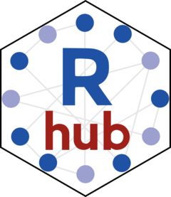
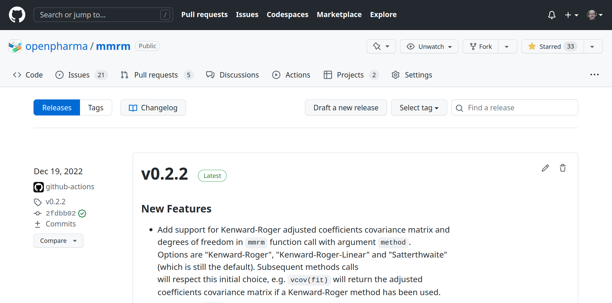

Publication
BBS Course: Good Software Engineering Practice for R Packages
Photo CC0 by Andrea Piacquadio on pexels.com
Website with pkgdown
Setup of pkgdown
pkgdownmakes it quick and easy to build a website for your package- After installing
pkgdown, just useusethis::use_pkgdown()to get started - Main configuration happens in
_pkgdown.ymlfile - Many customizations can be applied, but main work during development is to keep the
referencesection updated with names of.Rdfiles
Example _pkgdown.yml file
---
url: https://openpharma.github.io/mmrm
template:
bootstrap: 5
params:
ganalytics: UA-125641273-1
navbar:
right:
- icon: fa-github
href: https://github.com/openpharma/mmrm
reference:
- title: Package
contents:
- mmrm-package
- title: Functions
contents:
- mmrm
- fit_mmrm
- mmrm_control
- fit_single_optimizer
- refit_multiple_optimizers
- df_1d
- df_md
- componentPublication as GitHub Page
- It is helpful for users to read the website online
- GitHub is very helpful here because it allows
- A separate branch
gh-pagesthat stores the rendered website - GitHub actions automatically render the website when the
mainbranch is updated
- A separate branch
- To get started, use
usethis::use_pkgdown_github_pages()
Licensing, Open sourcing, Versioning
Licensing
- High level categorization of licenses:
- “Permissive”: Relaxed. Can be freely copied, modified, published (under the same license).
- “Copyleft”: Stricter. Same rights need to be preserved in derivative works.
- R itself is licensed under GPL, but packages can choose, e.g.:
usethis::use_mit_license()for permissive MITusethis::use_gpl_license()for copyleft GPL
- Include minimum version, e.g.
GPL (>= 3)
Licensing (cont’d)
- Need to be careful here when you bundle any code from other software
- Care must be taken that any copyright/license statements from copied or modified code are preserved and authorship is not misrepresented
- Are the licenses of your package and the source compatible?
- e.g. cannot copy/paste code from a GPL package and publish in an MIT package
LICENSEfile optionally can contain further restrictions of the license
Open Sourcing
- The easiest way to “open source” your R package is to make the GitHub repository public
- This allows for easy open source contributions from other developers via pull requests
- Please check with your organization first:
- Are they ok to publish the software?
- What is the appropriate copyright holder?
- Also allows bugs to be filed and to have the GitHub issues page in the package description
Versioning
- The
Versionfield defines the package version - Syntax: Three integers separated by
.or-- Canonical form is:
x.y-z, equivalent tox.y.z
- Canonical form is:
- Useful conventions of “semantic versioning”:
xis major: Increment this for breaking changesyis minor: Increment this for new featureszis patch: Increment this for bug fixes onlyx.y.z.9000and count up during developmentusethis::use_version()can help with this
Checks before Release
CRAN (The Comprehensive R Archive Network)
- CRAN is the central repository for R packages
- It has additional requirements beyond the standard package ones, which are described in the Repository Policy
- Submitting a package indicates agreement with the policy
- In particular: “The time of the volunteers is CRAN’s most precious resource, and they reserve the right to remove or modify packages on CRAN without notice or explanation (although notification will usually be given).”
CRAN (cont’d)
- Only source packages can be submitted
- But
.rdadata files are allowed
- But
- Need single designated maintainer (person, not mailing list)
- Additional
Contactfield could be used
- Additional
- Citations in author-year style, followed by
<doi:...> - Reducing run time of tests, checks, examples, vignettes is important
- Need to provide cross-platform portable code: CRAN runs checks on Windows, Mac, several Linux OS
CRAN (cont’d)
❗ A CRAN submission can be punishing, painful, and nerve-racking:
The first release of the rpact package took 5 weeks and 6 submission attempts; painful experiences:
- Some Linux machines may generate different random numbers than expected (despite setting a seed)
- Not only errors and warnings lead to the rejection of a submitted package, but also notes
- Your local Windows test system may be much faster than the CRAN system (e.g., 5 times)
- Don’t use “R Package for” in your package title
- The description of the package must be provided with a doi reference
CRAN (cont’d)
Example message informing about the rejection of the last rpact submission:
Dear maintainer,
package rpact_3.3.2.tar.gz does not pass the incoming checks automatically, please see the following pre-tests:
Windows: 00check.log Status: OK, Debian: 00check.log Status: OK
Please fix all problems and resubmit a fixed version via the webform.
Best regards,
CRAN teams’ auto-check service
r-devel-windows-x86_64 Check: Result: NA, Maintainer: ‘Friedrich Pahlke’
r-devel-windows-x86_64 Check: Overall checktime, Result: NOTE, Overall checktime 12 min > 10 min
r-devel-linux-x86_64-debian-gcc Check: Result: Note_to_CRAN_maintainers Maintainer: ‘Friedrich Pahlke’
R-Hub to the Rescue

- Free
R CMD checkruns on different operating systems before submitting to CRAN - Supported by the R consortium
- Typically used via the website
- There is also an R API:
rhub::check_for_cran()is comfortable
GitHub
Releases
- Based on Git tags, and a feature of GitHub
- Are “deployable software packages to make them available for a wider audience to download and use”
- Contain release notes and links to the binary package files for download
- However, for R packages these
tar.gzpackage files are rarely used directly
- However, for R packages these
Releases: Example

References
Exercise
- Run CRAN like checks in RStudio: use
--as-cranin check options - Look at the CI/CD checks reported on your GitHub repository
- Where are the
R CMD checkresults?
- Where are the
- Deploy the
pkgdownwebsite withusethis